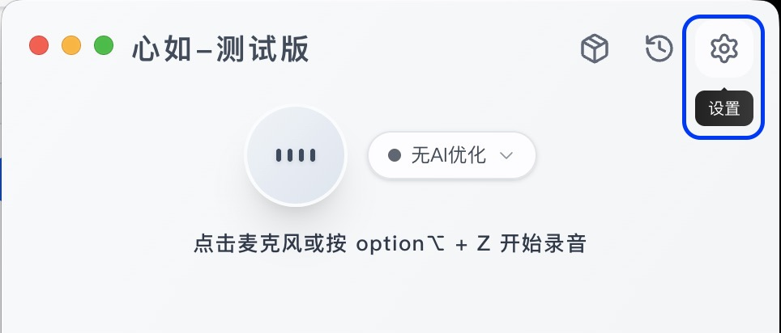
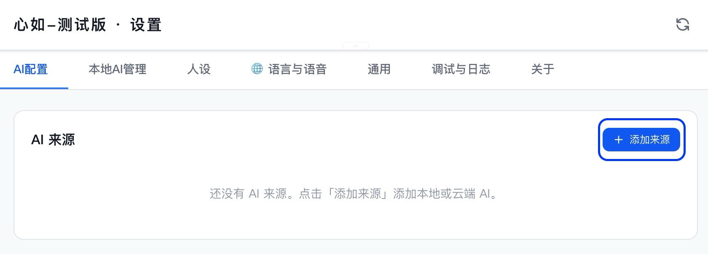
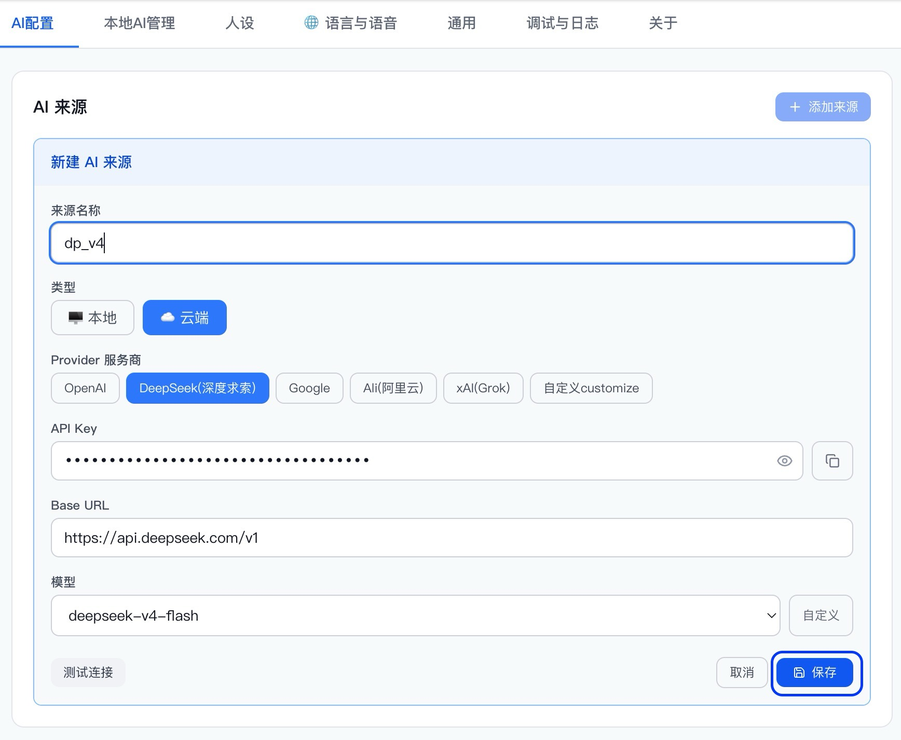
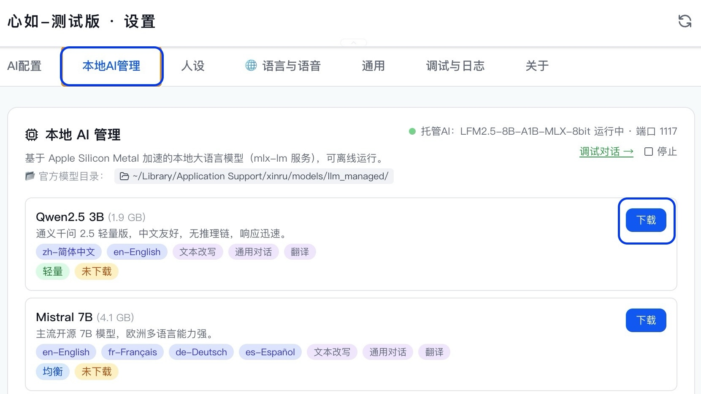

语音识别模型建议
`Whisper Medium`：如果你更重视识别质量，优先推荐
`Whisper Small`：对很多用户来说是比较平衡的选择
`Whisper Tiny`：更适合更在意速度、对准确率要求没那么高的用户
更小模型更快更轻；更大模型更慢但准确率更高
对于大部分电脑而言，运行本地大模型并不轻松。因此更建议新用户先完成云端大模型配置，让心如尽快进入真正可用的状态。

1. 从首页右上角进入 设置。

2. 在 AI配置 页面点击 添加来源。

3. 先选择 云端，再选择服务商。
中国用户更推荐优先使用 DeepSeek（深度求索）；如果你使用的服务商不在列表中，也可以选择 自定义 customize。
来源名称可以自由填写，建议用模型缩写，方便以后辨认，例如 DeepSeek R1 可写成 dp_R1。
确认 API Key、Base URL 和模型都正确后，再测试连接并保存。
如果你的电脑性能和磁盘空间允许，可以继续下载一个本地 AI 模型。这样后面除了云端来源，你也会拥有可离线使用的本地来源。

1. 打开 设置，进入 本地AI管理。
浏览当前可用模型后，先选一个适合自己的模型，再点击右侧的 下载。

2. 下载开始后，等待模型下载完成。
下载过程中请尽量不要频繁操作设置页面；如果真的遇到异常卡死，再考虑按提示强制退出。

3. 下载完成后，回到 AI配置 页面。
你会看到系统自动生成的 官方本地AI 来源，例如图中的 Qwen2.5 3B。
这类由系统管理的本地模型，不需要你再手动新建来源；后面只要把它选为默认本地来源即可。
这一步很简单：选一个默认本地来源，再选一个默认云端来源。之后大多数人设就能按预期工作。

1. 回到 AI配置 页面，分别选择一个 默认本地来源 和一个 默认云端来源。
系统有时会自动补上默认来源，但每次新增或删除来源后，仍然建议你再确认一次当前默认来源是否正是你想要的那个。
语音识别模型负责把你的声音转成文字。M 系列用户推荐 Whisper Medium，追求速度可选 Whisper Small 或 Tiny。

1. 打开 设置，进入 语言与语音，找到 语音识别模型 卡片。
根据自己的电脑选择合适的模型，点击右侧 下载。

2. 下载开始后耐心等待，模型文件较大，请勿频繁操作设置页面。
如遇异常卡死，可按提示强制退出后重新下载。

3. 下载完成后，点击该模型右侧的绿色 切换 按钮，将其设为当前使用的识别模型。

4. 切换成功后，该模型卡片会显示绿色边框与 当前使用 标签。建议重启应用后再开始使用。